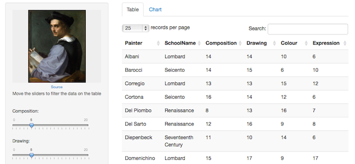

- A subjective assesment of 54 classic painters, done by Roger de Piles
- The painters were assessed on a 0 to 20 scale on four characteristics: composition, drawing, colour and expression. 
Daniel Pradilla
Like so:
schools<-data.frame(School=c("A","B","C","D","E","F","G","H"),
SchoolName=c("Renaissance", "Mannerist", "Seicento",
"Venetian","Lombard","Sixteenth Century","Seventeenth Century", "French") )
data<-painters[painters$Composition >= input$Composition
& painters$Drawing >= input$Drawing
& painters$Colour >= input$Colour
& painters$Expression >= input$Expression, ]
data<-cbind(Painter = rownames(data),data)
data<-merge(data[,], schools, by="School")
data[order(data$Painter),
c("Painter","SchoolName","Composition","Drawing","Colour","Expression")
]
data.frame(School=c("A","B","C","D","E","F","G","H"),
SchoolName=c("Renaissance", "Mannerist", "Seicento",
"Venetian","Lombard","Sixteenth Century","Seventeenth Century", "French") )
## School SchoolName
## 1 A Renaissance
## 2 B Mannerist
## 3 C Seicento
## 4 D Venetian
## 5 E Lombard
## 6 F Sixteenth Century
## 7 G Seventeenth Century
## 8 H French
output$painterschart <- renderChart({
mypainters <- getPainters(input)
paintersdf <- as.data.frame(table(mypainters[, "SchoolName"]))
colnames(paintersdf) <- c("SchoolName","Freq")
p1 <- nPlot(Freq ~ SchoolName, type="discreteBarChart", data = paintersdf)
p1$set(dom = "painterschart",width=500)
p1$xAxis(
rotateLabels=-45, height=200
)
p1$yAxis(tickFormat="#!function(d) {return d}!#")
p1$chart(showValues='true'
,valueFormat="#!function(d) {return d}!#"
)
return(p1)
})
searchPainter = function(name) {
var baseUrl ='https://ajax.googleapis.com/ajax/services/search/images?v=1.0&q=';
var url = baseUrl + name + ' painting commons.wikimedia' + '&callback=?';
console.log('getting painting for ' + name);
$.getJSON(url, function(json){
var results=json.responseData.results;
if (results[0]){
setImage(results[0].url,results[0].originalContextUrl);
} else {
setDefaultImage();
}
})
}